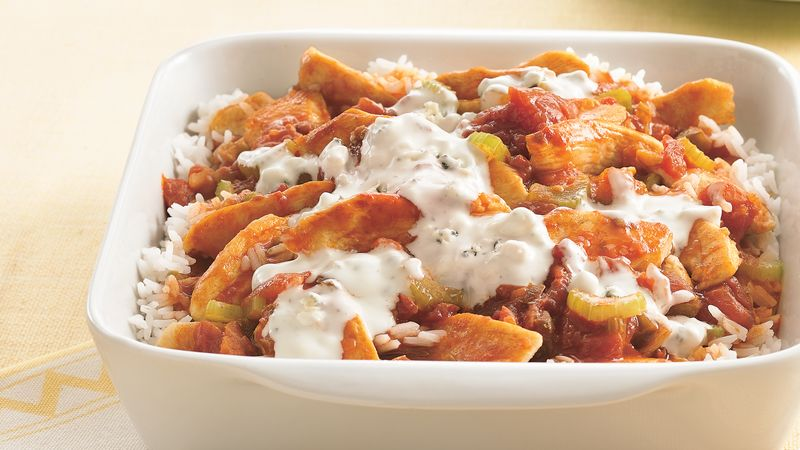

Healthy and Delicious Air Fryer Buffalo Chicken and Rice

Description
Ingredients:
- chicken breast
- rice of your choice
- Nando's Buffalo Sauce
- salt
- pepper
- garlic powder
- onion powder
- paprika
- ranch (optional)
Steps:
- Butterfly chicken breast into even halves
- Coat chicken breast in salt, pepper, garlic powder, onion powder, and paprika
- Rub seasonings into chicken breast
- Place chicken breast into air fryer, with space between them
- Set air fryer to 400F for 8 minutes
- While chicken is cooking, boil water and prepare to cook rice
- Cook rice in the water until it's to your liking
- When chicken is done, flip them over in the air fryer and cook again for 7 minutes
- When chicken is finished cooking, plate your rice and chicken
- Drizzle Nando's buffalo sauce (and ranch if you want) over the dish and enjoy!